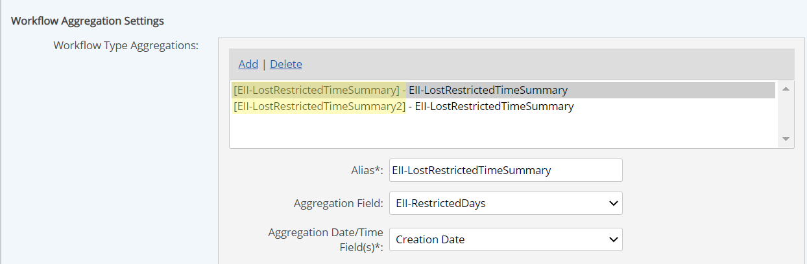
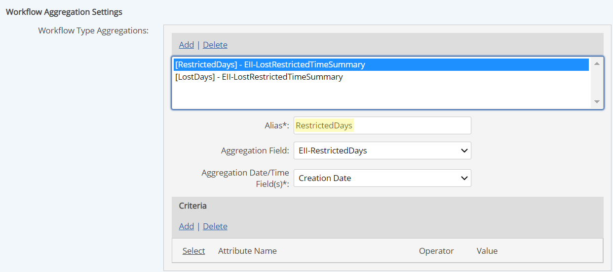
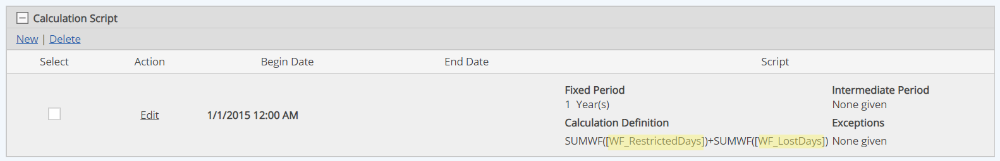
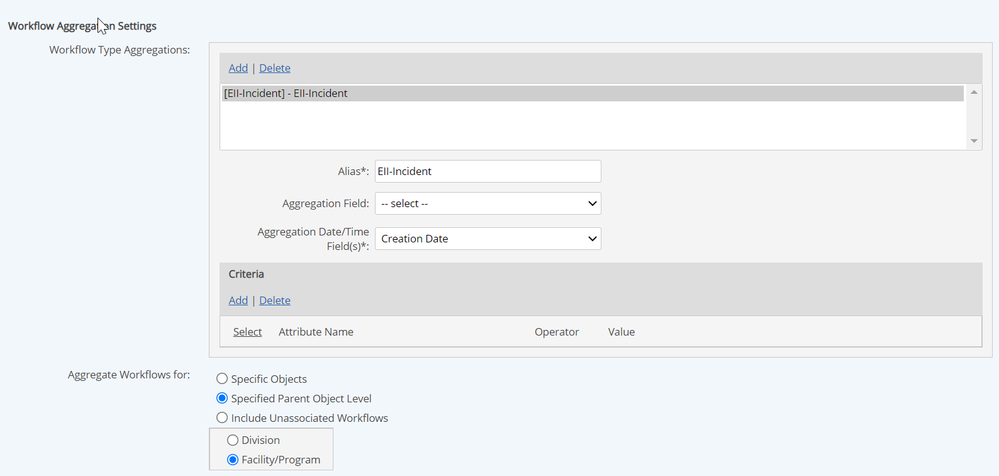
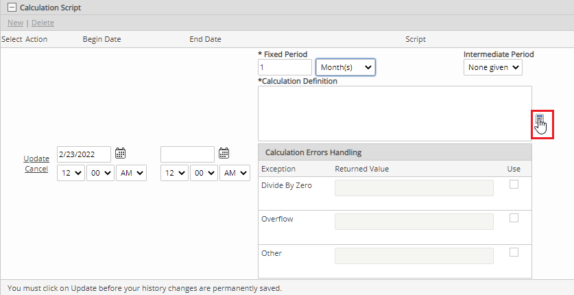
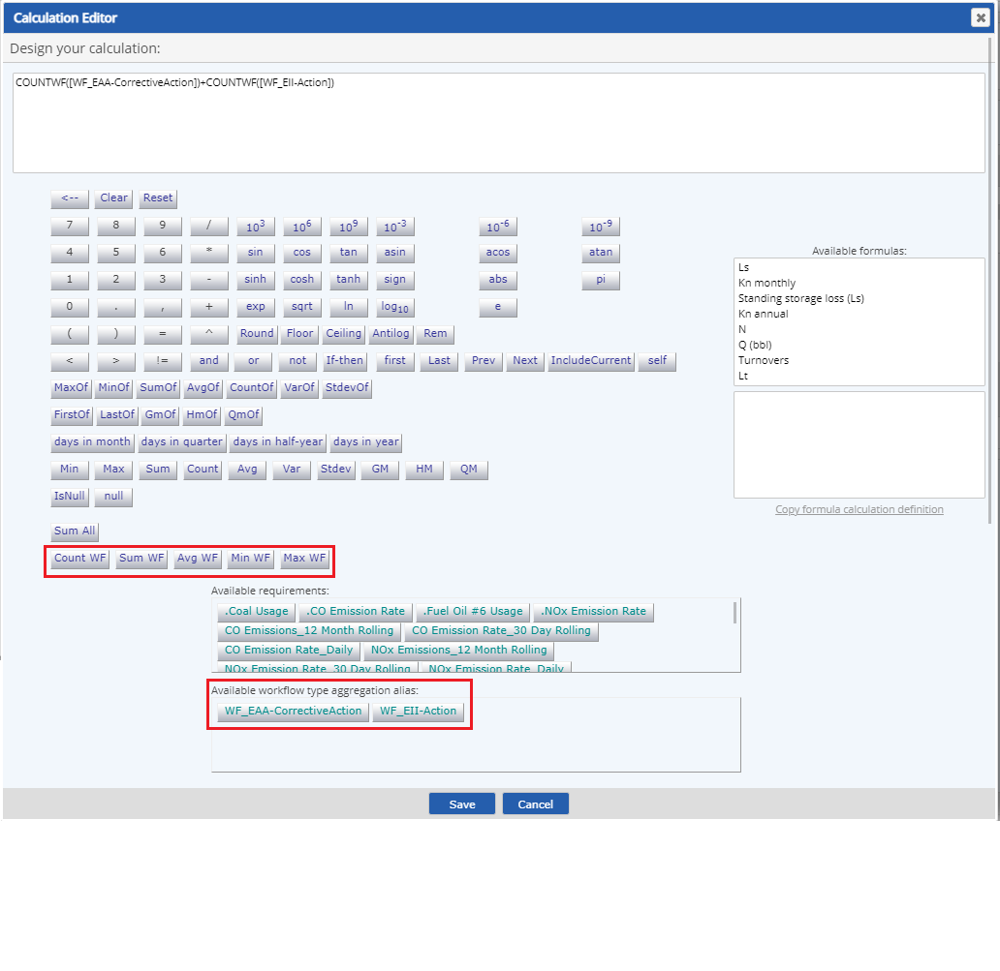

Select Time-Based Calculated (Fixed period) for the type.

To apply user-defined custom fields, select a Custom Field Template to apply. See Custom Field Templates.
Enter a Name.
In the Requirement Source section (optional) you can further define the requirement driver by selecting the Specific Citation.
Optional fields include:
Active Date/Inactive Date:The begin and end dates that a requirement applies (optional)
Description: General description of requirement
UOM: Unit of measure. (May apply if aggregation is for a numeric field in a workflow which has a logical unit of measure.)
Precision: Number of places to the right of the decimal point to display
Calculation purpose: Describe the purpose of the calculation.
Field Definitions for Time-Based Calculations is not generally applicable to workflow aggregations, but may be used in special circumstances.
Standard values that may be used in the calculation (but not usual for workflow aggregations) include Calculation Requirements and Calculation UDF Parameters (from a Calculation Template). You will need to add any requirements to use that are not in the same location.
Scroll to the Workflows Aggregations Settings section.
All of the settings below can be selected multiple times. For instance, you can pick a Workflow Type called "EII-Incident" and set up all the fields below for it, then add "EII-Incident" to the Workflow Type Aggregations list again and set different criteria. The UI will append "2", "3", etc onto the Workflow Type Name and that will be used in the script to identify which Workflow Type Aggregation is being used for cases where more than one Aggregation for the same Workflow Type will be utilized. You can also add more than one Workflow Type to the list, so you might have Workflow Type Aggregations of "[EII-Incident]", "[EII-Incident2], and "[ESI-Incident]"
Workflow Type Aggregations: Click Add, then find and select a workflow type for which you want to perform the aggregation. You may add more than one workflow type. (For example, you may wish to aggregate Corrective Actions from inspections and audits, which are different workflow types.) You may also add the same workflow type more than once in order to define different criteria for it. The Alias will be used in the calculation script to identify which Workflow Type Aggregation is being used.
Alias: This is the name that will be used in the calculation. The workflow name will be used by default. In the case of a workflow type added more than once, a number will be appended to it (i.e., [EII-Incident]", [EII-Incident2]). If you want a simpler abbreviation or more meaningful name you can enter one.
When you will be aggregating more than one field from the same workflow type, it may be helpful to use the field name for the Alias so that the calculation script is clearer, as shown below.



Aggregation Field: Select the field to aggregate from the dropdown list. Any global field of a numeric type may be used. This field is not required if the aggregation type is COUNTWF.
Aggregation Date/Time Fields: You must select the date field which will determine the inclusion of the workflow in the calculation time period. Typically this might be Creation Date (of the workflow instance), Due Date, or Close Date, but it may also be any global date or date/time field on the workflow type (such as "Date of Incident," where this is entered by the user on the form).
If the aggregation is based on a user-entered date field from a workflow form, time zones must be considered. A single Date or Date/Time field is always recorded in Facility local time, using the user's time zone converted to UTC then converted to Facility time zone. If there are separate Date and Time fields (as in some WAB apps), the user-entered values are taken exactly as entered and treated as Facility time zone, disregarding user's time zone. In most cases, user time zone will be the same as facility time zone, so there will be no discrepancy, but you may want to consider the case where user time zone and facility time zone are different, depending on how the App is used.

Criteria: You can filter workflows by criteria such as workflow status, workflow step, or a custom field included in the workflow. Multiple field values may be combined (evaluated as AND operator). Criteria can include fields of all types (true/false, text, number); options and operators available will depend on the field and entry type.
Aggregate Workflows for: This choice determines how the workflows are selected for inclusion. Choices are:
Specific Objects: Will aggregate workflows associated with one or more specific objects. If you select this option, a box appears in which you can then select the objects (requirements or tree objects). (This is the only option for workflows associated with Divisions or Requirements.)
Attempting to delete an object targeted by a workflow aggregation calc will not be allowed. The aggregation calculation must be edited to remove the object in order to delete it.
Specified Parent Object Level: Workflows associated with a tree object in the requirement's direct hierarchy path will be aggregated. You must choose the object type. Options available are limited to the direct ascendants of the requirement. For example, if the requirement is a child of a Facility, then only the parent Facility and grandparent Division are available; if it is the child of a POI, then POI, Unit, Facility and Division are available. The object will remain relative to the requirement if it is copied or moved.
Moving an object targeted by the hierarchy will result in re-calculation of the workflow aggregation calculation.
Include Unassociated Workflows: Aggregates all workflows of the specified type that are NOT associated with any object.
Click New to add a calculation definition.
Set the Field Definitions for Time-Based Calculations for the calculation.
This is the period of time in which the data for the requirement are processed. It may be expressed as a number of hours, days, weeks, months, quarters, or years. (See Field Definitions for Time-Based Calculations.)
Intermediate Period: Optionally, you may select an Intermediate Period to enable intermediate calculations within the fixed period. For example, if the Fixed Period is 1 year, and the Intermediate Period is Quarterly, the calculation will trigger each quarter within the year with a rollup to date.
The calculation Begin Date determines the start of the period (calendar year or otherwise).

Click the calculator button to bring up the calculation builder.
Use the calculation builder to define the calculation. You may use the function buttons in the calculator or type directly in the box; you can also paste text. An aggregation type is required.
The workflow aggregation types are shown in the calculator. The "Available workflow type aggregation alias box" show the selected workflows or workflow fields that can be used in the calculation. Select the buttons to select the components for your calc.

Enter the Calculation Begin Date, then click Update to save the formula value.
Other options include:
Calculation Errors Handling: For defining a value to be returned if the calculation produces an error. (Not usual for workflow aggregations.)
Expected Frequency: Produces a data warning if expected data is missing, defined as the number of data points expected per day.
Limits: Regulatory and internal limits may be set to produce data warnings when limits are exceeded. See Setting Regulatory Limits.